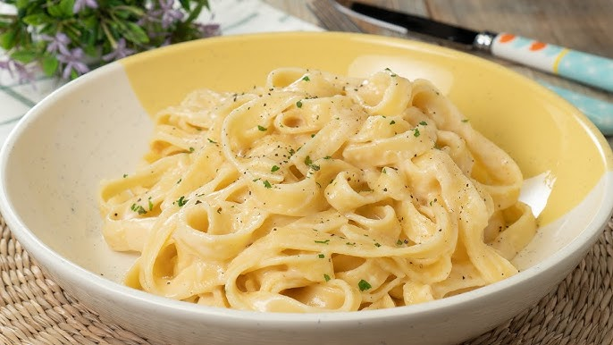

Pasta Italiana
Tiempo: 30 min | Dificultad: Fácil
Ingredientes:
- 200g de pasta
- 2 tomates maduros
- 1 diente de ajo
- Aceite de oliva y albahaca fresca
Preparación:
- Hervir la pasta hasta que esté al dente.
- Preparar la salsa sofriendo ajo y tomates en aceite de oliva.
- Mezclar la pasta con la salsa y decorar con albahaca.